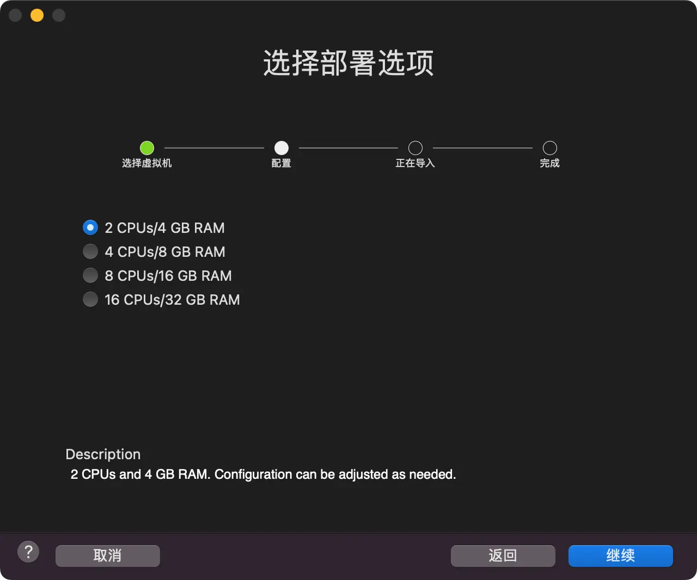
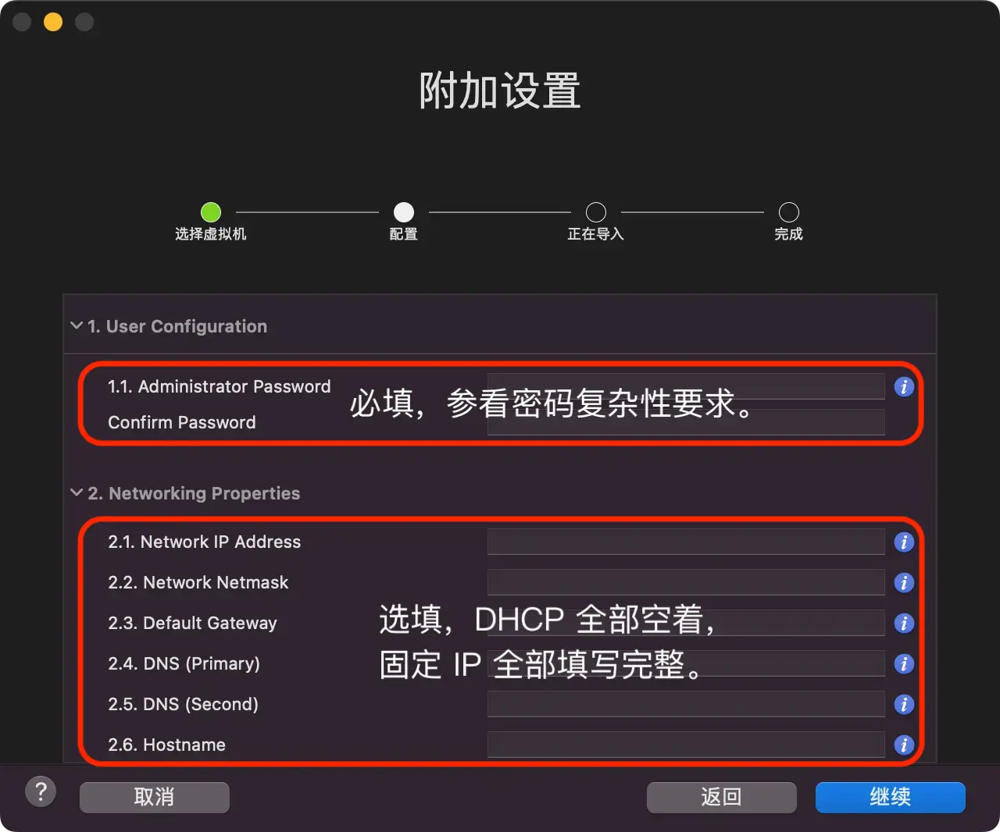

请访问原文链接：Windows Server 2008 R2 OVF (2025 年 10 月更新) - VMware 虚拟机模板 查看最新版。原创作品，转载请保留出处。
作者主页：sysin.org
Windows Server 2008 R2 SP1 Datacenter x64 简体中文版
Version 6.1, Build 7601, updated Oct 2025
 Windows Server 2008 R2
Windows Server 2008 R2
部署截图及说明

图一：CPU 和内存分配选项，可在部署后按需修改。

图二：用户账号和网络配置。
注：本例截图来自 Fusion，在 vSphere 和 Workstation 中展现样式略有差异，内容相同。
💡 提示：vSphere Client 严格执行 OVF 属性强制性要求检查（特别是对 Password 字段默认为必填项）；其他客户端如 ESXi Host Client、Fusion 和 Workstation 校验相对宽松，应按文中要求填写。
请注意：
1.1 此处密码必须符合复杂性要求（系统默认值）
密码必须符合下列最低要求：
- 不能包含用户的账户名，不能包含用户姓名中超过两个连续字符的部分
- 至少有六个字符长
- 包含以下四类字符中的三类字符：
- 英文大写字母 (A 到 Z)
- 英文小写字母 (a 到 z)
- 10 个基本数字 (0 到 9)
- 非字母字符 (例如 !、$、#、%)
- 在更改或创建密码时执行复杂性要求
2.2 子网掩码直接填写，例如 255.255.255.0（与 Windows 10 Server 系列版本不同）
2.6 Hostname：计算机名称
因部分读者不知道计算机名称怎么填写而报错，这里增加一个计算机名称的描述。
计算机名称包括 NetBIOS 名称和 DNS 名称，MS 官方规则稍显复杂，这里简单概括或者建议使用如下规则：
- 长度 1-15 个字符
- 字符使用三种类型或其组合：字母字符 (A-Z，不区分大小写) 、数字字符 (0-9) 、减号或称连字符 (-)
- 推荐 3 种示例：全部字母，字母和数字组合，字母-数字或者数字-字母（中间允许多个-）
- 不要全部用数字（NetBIOS 名称可以支持，但 DNS 名称不允许）
OVF 特性
1. OVF 版本
- 默认 VM 硬件版本 11（GuestOS ID 最低要求，可升级至最新版）
- 兼容 ESXi 6.0、Fusion 7、Workstation 11 及以上
- 启用 CPU、内存热插拔 (sysin)
- VM-Tools 版本：13.0.10.0（当前）
2. 系统配置
- 时间和货币格式：本次使用简体中文版，默认
- 系统版本：Windows Server 2008 R2 Datacenter, 完整安装
- 分区：System Reserve（100M），C 盘 40G 整数分区（可自由调整）
- 启用远程桌面 (sysin)
- 启用 ICMPv4 防火墙规则
- 添加了 “Command Prompt” 和 “PowerShell” 右键快捷命令菜单
- Windows Update 默认配置未启用，服务禁用（主流支持已经结束）
3. OEM BIOS 支持
支持 Dell OEM 2.2 及以上版本的 BIOS。推荐使用本站 VMware 定制版启用完整功能，参看下述 “适用的 VMware 软件下载”。
💡 特别提示：这里的 OEM BIOS 是软件技术，并非硬件的 BIOS，可适用于任何品牌的计算机，以及任意兼容机。标题中的 Dell 只是采用了最流行的 Dell 产品技术方案。
4. 系统组件
- 添加组件：Telnet Client、SNMP-Service、Windows Backup
- 添加组件：.NETFX 3.5 (自带)
- 更新 PowerShell 5.1，即 .NETFX 4.8 + WMF 5.1
- 补丁更新至当月版本，通过 dism 集成（主流支持 2020 年 1 月已经结束）
5. 应用软件
- AutoRuns 13.30 (14 已不支持)、7-Zip 22.00、Unlocker 1.9.2 等（全部为免费软件）
- 浏览器：Firefox 115 (120 已不支持)，仅针所有用户配置，通过策略禁用自动更新
说明：以上软件版本描述的是当前版本，旧版 OVF 包含的版本可能略低。
6. 个性化配置
无。
7. 关于 sysprep
由于产品历史原因，自动运行 sysprep 将导致部署时间过长。故放弃此项配置，现在可以支持手动运行 sysprep。
适用的 VMware 软件下载
建议在以下版本的 VMware 软件中运行（Linux OVF 无需本站定制版可以正常运行，macOS 虚拟化如果不是 Mac 必须使用定制版才能运行，Windows OVF 需要定制版才能启用完整功能）：
- VMware vSphere：
- VMware ESXi 9 or with driver & vCenter Server 9 & VCF Operations 9
- VMware ESXi 8 or with driver & vCenter Server 8
- VMware ESXi 7 or with driver & vCenter Server 7
- macOS：VMware Fusion
- Linux：VMware Workstation for Linux
- Windows：VMware Workstation for Windows
OVF 版本兼容性和部署方式
默认 VM 硬件版本 11（GuestOS ID 最低要求 7，可升级至最新版），兼容 ESXi 6.0、Fusion 7、Workstation 11 及以上版本。
✅ 支持通过以下客户端部署：
- VMware Fusion for Mac：12、13 及更新版本（推荐版本 13 及以上）
- VMware Workstation for Windows & Linux：16、17 及更新版本（推荐版本 17 及以上）
- VMware vSphere（vSphere Client）：7.0、8.0、9.0 及更新版本（推荐 7.0U3 及以上）
- ESXi Host Client：内置于 ESXi 7.0U3、8.0、9.0 及更新版本（推荐版本 2.10.1 及以上）
已经弃用的客户端如 vSphere Web Cleint (Flash)，以及上述客户端旧版不建议使用。
✅ 客户端系统和软件要求：
支持的客户端操作系统
- macOS（推荐 macOS Tahoe、macOS Sequoia、macOS Sonoma）
- Windows 32-bit (x86) and 64-bit (x64)（推荐 Windows 11、Windows Server 2022、Windows Server 2025）
- 主流 Linux 桌面发行版理论上支持（官方未列出）
支持以下浏览器版本【下载】
- Google Chrome 89 or later
- Mozilla Firefox 80 or later
- Apple Safari 9.0 or later (仅限 Host Client)
下载地址
保留最近三个版本。
Windows Server 2008 R2 SP1 Datacenter x64 简体中文版 (updated Jun 2025)
- 百度网盘链接：https://pan.baidu.com/s/1NsG6I4mmOd8kehTzHw8JkQ?pwd=<专享已公布>
- SHA256SUM: 自动校验
- 文件大小：约 6GB
Windows Server 2008 R2 SP1 Datacenter x64 简体中文版 (updated Aug 2025)
- 百度网盘链接：https://pan.baidu.com/s/1NsG6I4mmOd8kehTzHw8JkQ?pwd=<专享已公布>
- SHA256SUM: 自动校验
- 文件大小：约 6GB
Windows Server 2008 R2 SP1 Datacenter x64 简体中文版 (updated Oct 2025)
- 百度网盘链接：https://pan.baidu.com/s/1NsG6I4mmOd8kehTzHw8JkQ?pwd=<专享已公布>
- SHA256SUM: 自动校验
- 文件大小：约 6GB
✅ 公布获取此专享资源的正确方式：
为保证本站持续发展，该资源通过捐赠获取，捐赠是一种可以附加条件的行为，按照下面指定方式捐赠即可获得该项下载。
捐赠者请知悉：
- 笔者耗费了大量的时间和精力来分享产品和知识，网站运行也需要成本，捐赠是对本站提供下载服务的回报。
- 捐赠获取的软件皆为官方原版或包含了使用方法或分享了技术心得，捐赠是对笔者行业知识的认同和回馈。
- 下载的软件仅供个人学习和研究使用，请遵循原产品使用协议，违者后果自负。
- 如果需要购买产品，请联系开发者和厂商。
- 捐赠或赞赏属于自愿赠予行为，提交后即表示您对作者的支持与认可。为避免误操作，请在确认前仔细检查金额，支付完成后将无法撤销或退还。
- 笔者乐意解答技术问题，但限于时间和知识，如您未能获得满意答案请见谅，捐赠并不包含其他服务。
- 未承诺提供版本更新服务，但是当前页面发布的更新版可留言获取。
- 默认发送当前最新版，如有版本要求请指定。
- 如果不认同上述条款，请勿捐赠，谢谢。
感谢无私捐助者！当然无需任何捐助或者捐赠，您仍然能获得本站 20T+ 的免费资源和技术分享。
原版下载：Windows 7 & Windows Server 2008 R2 简体中文版下载 (2026 年 1 月更新)

文章用于推荐和分享优秀的软件产品及其相关技术，所有软件默认提供官方原版（免费版或试用版），免费分享。对于部分产品笔者加入了自己的理解和分析，方便学习和研究使用。任何内容若侵犯了您的版权，请联系作者删除。如果您喜欢这篇文章或者觉得它对您有所帮助，或者发现有不当之处，欢迎您发表评论，也欢迎您分享这个网站，或者赞赏一下作者，谢谢！
 支付宝赞赏
支付宝赞赏  微信赞赏
微信赞赏赞赏一下
敬请注册！点击 “登录” - “用户注册”（已知不支持 21.cn/189.cn 邮箱）。 请勿使用联合登录（已关闭）。